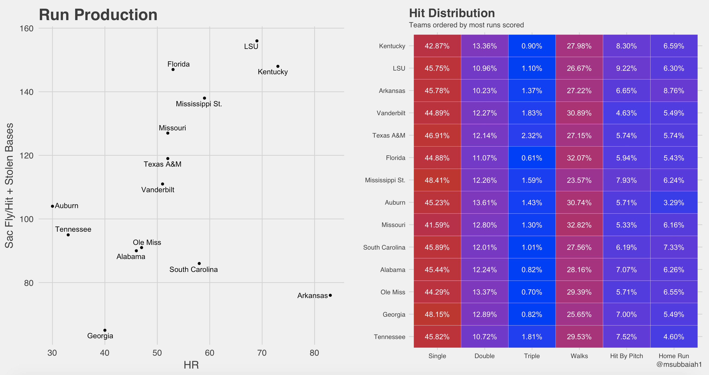
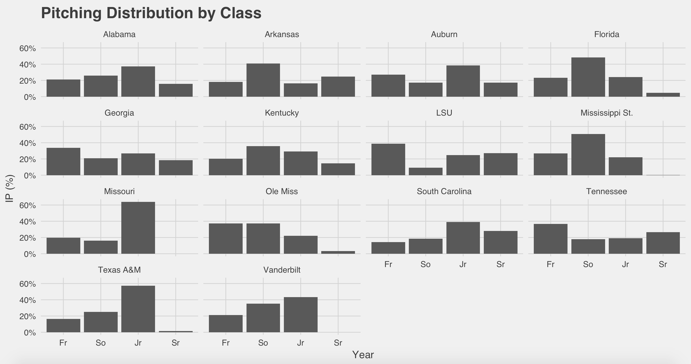
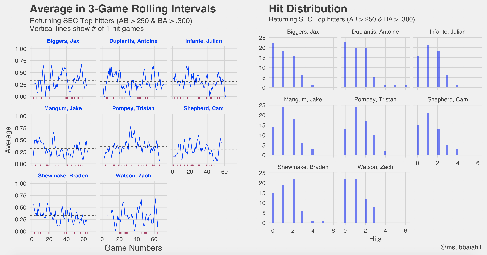
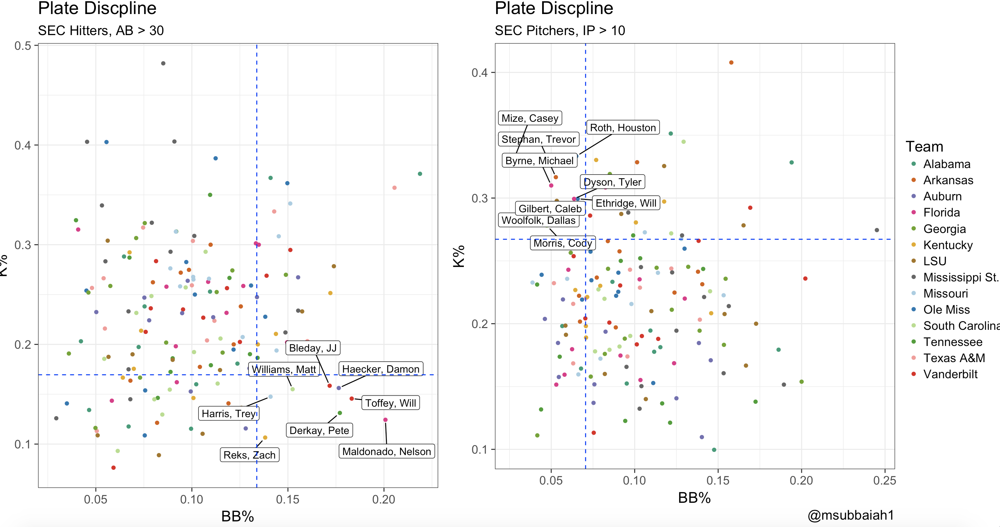

With College baseball season about 6 days away, it’s time to recap last year and look forward to the upcoming year. 2017 was good for SEC teams in general, culminating with a College World Series (CWS) pitting LSU vs. Florida. Florida eventually went on to win the CWS.
Expected W-L
The graph on the left hand side, compares the Pythagorean expectation to their actual win percentage. Teams above the diagonal have performed worse than expected and below the diagonal performed better than expected. The Pythagorean expecation is solely based on Runs Scored and Runs allowed.
The right hand side plot helps identify how many 1-run,2-run, 10-run games teams were in. Immediately Florida jumps out, they vastly out-performed their Pyt expectation and not surprisingly were in a lot of one-run games. This could suggest that when Florida lost, they lost big but were able to win the close games. (Just speculation here).
The opposite can be seen with Kentucky and Vandy they didn’t meet expectations. We can try to tease some insight out of the run differential, but it seems that both of them played in their fair share of close games as well as blow-outs. Kentucky seems to have been on the winning side of blow-outs but weren’t able to close out the close games, which would explain the difference in the Win % seen.
Let’s move on to look at each team’s hitting performance.
Team Hitting
The last couple of years has shown that the SEC has some very capable bats, as well as arms (Vandy) but we will get to that later. Let’s take a look at some numbers below to get a better sense of how teams are scoring.

The left side takes a deeper look into whether teams are punching runs through methodically (runners on base, Sac Fly, etc) or just knocking it out of the park. To go along with this, the hit distribution for each time can be seen on the right.
LSU and Kentucky seem to top both charts offensively. Arkansas is truly surprising in that over 8.8% of their hits were HRs, still seemed to be pretty effective. A run is a run. The Aggies (TAMU) and Vanderbilt on the other hand seemed to take a more balanced approach to bringing runners home. Some thanks ought to be sent out to the two coaching staff’s as they clearly have stressed situation hitting. Or Maybe the parks are contributors, Blue Bell field might just be more suspect to triples than Home runs. Who knows? More analysis would need to be done, but a cursory glance shows the Aggies at a vastly greater rate of triples than anyone in the Conference.
No team is complete however, without a good pitching staff. Let’s take a look at pitching staff brought back for each team.
Team Pitching
The graph below should be indicative of which class year most innings are coming from for each individual team.

Veteran Staffs: TAMU, Mizzou, Bama, and South Carolina
The thinking behind Vandy’s lack of seniors might be the incredible pitching development through the Sophomore and Junior years. They always seem to have ace pitching staffs.
Alright let’s take a look at some of the player stats.
Individual Hitting
We’ll look at the top returning hitters. Most players are eligible for the draft at the completion of their junior year. It seems that more hitters tend to leave their Jr year.

I’ve recently become a fan of rolling average plots. The plot on the left looks at streaky-ness for players on a rolling BA for 3 games. 3-games seemed appropriate since that would highlight whether a player had a big series against one team or another. The dashed line is the batting average over the course of the year for each player. Use this as a measuring stick on how the player is performing. The maroon vertical lines on the x-axis are where players had 1-hit games.
Braden Shewmake stands out as he slowly deteriorates over the course of the year. Tristan Pompey seemed to have a pretty consistent year with a few big weekends in the middle of the season. There is some volatility expected as players are bound to have highs and lows through the year.
On the right, we see the distribution of hits for each player over the year. You can see the volatility of the rolling BAs are much greater with players like Biggers and Duplantis as they have more 0-hit games than the others.
While that was helpful, let’s take a look at plate discipline for both sides
Plate Discipline
Plate Discipline normally refers to hitters and looks at their K% vs BB%. This helps identify the smart hitters. We will take the opportunity to also look at it for pitchers. This should show how effective and sometimes how patient pitchers are.

The bottom right corner, on the left plot, shows the most disciplined hitters in the league. The top left corner, on the right plot, shows the most effective pitchers in the league.
Pitchers want to have high K rates and low BB rates, while hitters want the exact opposite (low K rates and high BB rates).
Well that wraps it up. Look for some future posts using last seasons data. I’m trying to create a random effects model to look at the talent distribution for returning hitters in the SEC. Anyways, can’t wait for the season to start on Friday!
Interactive record_plots
A few people have requested the ability to interactive with the plate discipline plots. Here you go.
If you want to take a look at the data or code, take a look at this github link. If you have any questions feel free to reach out @msubbaiah1.